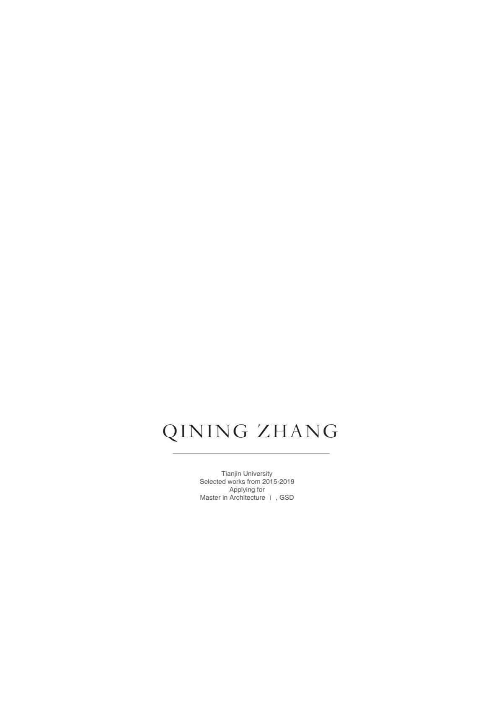

About
I am an Architecture Designer at HKS, Inc. in San Francisco, with a deep interest in the relationship between spatial experience and human behavior. My work explores how architecture can mediate between public and private, individual and collective, tradition and modernity.
I hold a Master of Architecture from UC Berkeley and a Bachelor of Architecture from Tianjin University. My academic portfolio spans architectural design, urban design, construction experiments, and digital design — from the layered intimacy of a Tokyo sharing house to the metaphysical atmosphere of a Rome gallery and the urgent humanitarian questions of refugee infrastructure in Tripoli.
I believe architecture is not merely about creating form, but about constructing experiences that reveal the complexity of the environments and communities we inhabit.